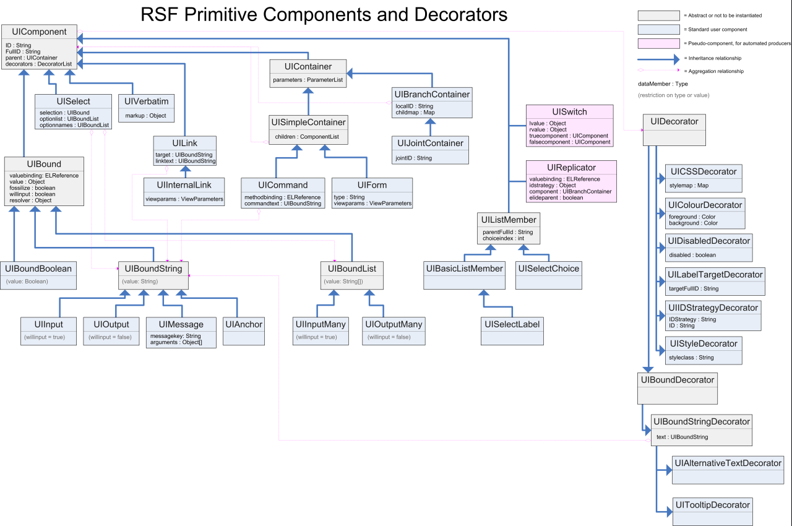

The RSF primitive components are a set of lightweight data structures which represent the contents and data binding function of a view, separate from any particular rendering of it. Here is a diagram of the standard set of RSF primitive components and decorators:

This diagram is similar to that for many other frameworks (in particular the names of the components are somewhat reminiscent of many of those in JSF), but there is an important difference - this diagram sums up essentially all of the contents of the components, and they have no other function other than containing the data members listed. RSF primitive components are intended to be equivalent to their serialized representation in XML or some other similar transparent encoding, and have no behaviour of their own. An idea of the contrast between RSF and other "component-oriented" frameworks can be seen on the UIComponent page - whereas the RSF UIComponent class is complete in 66 lines of code, the JSF base weighs in at a meaty 2906 lines.
Note that this collection is essentially complete - users are not expected to create any further instances of primitive components, and functions where reusable "widgets" are required are intended to be covered by encapsulating the logic that creates subtrees of these components, generally in the form of evolvers.
Here is a table describing the function of the concrete user-level components (shown in pale blue), together with the tags which they are legal to pair with when IKAT is used with the HTML dialect:
| Component | Function | Peering tags in HTML |
| UIOutput | Represents a textual label, either unbound or bound to the data model | **any tag** |
| UIInput | Input of a single String value, must be bound to the data model | <input , <textarea, other[1] |
| UIInternalLink | Reference to another RSF view | <a href= |
| UILink | A reference to a URL lying outside the RSF ViewParameters system | <a href=, <img, <frame, <iframe, <script[1] |
| UIBranchContainer | A point in the component tree/template where the renderer may branch from one template location to another | **any tag** |
| UIJointContainer | A point in the component tree representing a forced branch in the template, between two tags given different IDs | **any tag** |
| UIForm | A grouping of input controls which may give rise to a request, either idempotent (GET/render cycle) or non-idempotent (POST/action cycle) | <form |
| UICommand | A control which will produce a submission, giving rise to a non-idempotent request (POST/action cycle) | <input type="submit" |
| UIBoundBoolean | A control which has two states | <input type="checkbox" |
| UIAnchor | A named location within the document, which the user agent can be instructed to position the viewpoint at | <a name= |
| UISelect | A selection control where a user chooses either one or many options from a set of alternatives | <select, other[2] |
| UISelectChoice | An isolated choice from a parent UISelect control | <input type="radio" |
| UISelectLabel | The textual label for a parent UISelect control | **any tag** |
| UIInputMany | Input of multiple String values | **none**[3] |
| UIBasicListMember | An isolated input control for a parent UIInputMany control | As for UIInput |
| UIVerbatim | A text node in the resulting document, to be output without any escaping | **any tag** |
Note that since the "base universal" components UIOutput and UIBranchContainer can peer with any XML tag, even the HTML dialect IKAT renderer can usefully render a wide variety of other XML dialects, notably in "semantic" server AJAX responses (see UVB).
The following table shows the corresponding information for RSF Decorators:
| Decorator | Function | Rendered attribute in HTML |
| UIAlternativeTextDecorator | Alternative text to be displayed when a user agent cannot or chooses not to display an element | alt |
| UIColourDecorator | Controls the foreground or background colour of an element | style="color", style="background-color" |
| UITextDimensionsDecorator | Controls the number of rows and columns in a text control | cols, rows, size |
| UICSSDecorator | Renders CSS styles directly onto an element | style |
| UIDisabledDecorator | Controls whether an element is enabled in the UI. Disabled controls can not accept user input and will typically be rendered differently. | enabled |
| UIIDStrategyDecorator | Controls the strategy used by RSF to assign the XML id attribute. | id |
| UILabelTargetStrategy | Expresses that one control is to be interpreted as the label for another | for |
| UIStyleDecorator | Adds a CSS style class to the existing collection for an element | class |
| UITooltipDecorator | A label that is displayed when the mouse is hovered over the element | title |
| UIFreeAttributeDecorator | Free (and non-portable) control over all XML attributes | **any attribute** |
Some RSF primitive components behave significantly differently depending on which template tags they are paired with at render-time - this is a more extreme example of the parachute rendering which RSF primitives in general enjoy.
[#1] When a UIInput is peered with any non-input capable HTML tag (that is, anything other than <input> and <textarea>), it degrades to behave simply as a UIOutput with the same value. A UILink will similarly degrade when it is paired with any tag that is not listed in its row in the table.
[#2] When a UISelect component is peered with any HTML tag other than select, it goes into "distributed rendering mode", where the component is not rendered directly, and the user is expected to supply UISelectChoice and UISelectLabel components scattered elsewhere in the tree and template in order to render its parts. Idiomatically this is signalled by peering the UISelect with an empty <span/>. The location of the span remains important in that it must be positioned above any of the tags in the template forming any of the control components, but still within the same <form>.
[#3] A UIInputMany cannot be rendered directly in HTML (although it may appear as the selection member of a multiple-selection UISelect control) - instead a UIInputMany can only be realised through the action of some kind of evolver, e.g. StandardDynamicListInputEvolver.
Add new attachment
Documentation
Developers
Javadocs
Designers
Sample RSF Apps
Presentations
Acronyms
Downloads
Current Release
Trunk
Distributions
Old Versions
Community
Q&A
Forums
Mailing Lists
Issue Tracker
People
Design
Roadmap
Integrations
Concepts
Philosophy